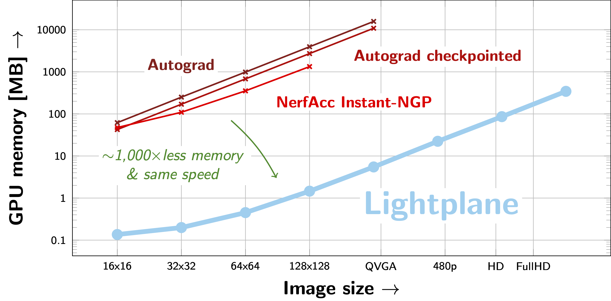

Introduction
Lightplane implements a highly memory-efficient differentiable radiance field renderer, and a module for unprojecting features from images to 3D grids, described in our technical report: [Lightplane: Highly-Scalable Components for Neural 3D Fields](TODO).
Lightplane can differentiably render batches of FullHD images while consuming less than a GigaByte of GPU memory. Rendering / backpropagation speed is comparable to existing methods, which however exceed memory limits already for a single QVGA image (640x480). As such, Lightplane’s memory and compute efficiency allows to drastically scale-up the latest neural field methods.
Documentation
Please visit the documentation website for a detailed project and API description.
Overview
Lightplane is a pair of highly-scalable components for rendering neural 3D fields. It consists of two components: Lightplane Renderer and Lightplane Splatter.
Lightplane Renderer (3D –> 2D) is a radiance field renderer which, given a camera viewpoint and a scene grid structure (triplane, voxel grid, etc.), renders the corresponding image.
Lightplane Splatter (2D –> 3D) is dual to Renderer: it takes image features and lifts/unprojects them to a 3D grid structure.
These two components are implemented as a pair of fused auto-optimized Triton GPU kernels.
Key features include:
Memory Efficiency: Lightplane dramatically saves memory usage with competing speed compared to existing methods. When rendering a 256x256 image for backpropgation, it uses 10 MB GPU memory while Pytorch implementation uses 10 GB.
Highly Scalable: The memory efficiency of Lightplane significantly boosts the scalability of 3D reconstruction/generation models. It allows lifting/unprojecting of hundred views, rendering high-resolution multiview images, with little memory usage.
Easy to Extend: Lightplane is a general design for 3D grid structures. Besides voxel grids and TriPlanes, it can be easily extended to other 3D grids (e.g. hash grid, HexPlane …). More support is coming.
Easy to Use: Lightplane is powerful, configurable and easy to use.
Installation
pip install cogapp
pip install triton
pip install plotly
Install the LightPlane package:
pip install -e .
(Optional for running example code and jupyter notebooks)
pip install notebookpip install imageio opencv-python lpips matplotlib
Usage
Lightplane Renderer and Splatter are packaged into torch.nn.Module, which are easy to use as plugins in neural 3D field pipelines.
Using Lightplane Renderer:
from lightplane import LightplaneRenderer, LightplaneSplatter, Rays
# Setup the gpu device the rendering module.
device=torch.device("cuda:0")
renderer = LightplaneRenderer(
num_samples=128,
color_chn=3,
grid_chn=3,
mlp_hidden_chn=32,
mlp_n_layers_opacity=2,
mlp_n_layers_trunk=2,
mlp_n_layers_color=2,
ray_embedding_num_harmonics=3,
).to(device)
# Create 128 random rendering rays:
num_rays = 128
rays = Rays(
directions=torch.randn(num_rays, 3) * 0.1,
origins=torch.randn(num_rays, 3),
grid_idx=torch.zeros(num_rays, dtype=torch.int32),
near=torch.full(num_rays, 0.1),
far=torch.full(num_rays, 3.0),
)
# Create a random triplane.
batch_size = 1
channels = 16
H = W = D = 64 # triplane spatial size
feature_grid = [
torch.randn(batch_size, 1, H, W, channels, device=device),
torch.randn(batch_size, D, 1, W, channels, device=device),
torch.randn(batch_size, D, H, 1, channels, device=device),
]
# Render the triplane.
(
rendered_ray_length,
negative_log_transmittances,
rendered_features,
) = renderer(rays=rays.to(device), feature_grid=input_grid)
# get the rendering alpha mask in range [0, 1] from negative log transmittances
alpha = (-negative_log_transmittances).exp()
Using Lightplane Splatter:
The following splats features to a voxel grid using Rays from the previous snippet:
# Initialize the splatter module
splatter = LightplaneSplatter(
num_samples=256,
grid_chn=channels,
).to(device)
# Assign the per-ray image features to splat to the `encoding` field of `rays`.
rays.encoding = torch.randn(num_rays, channels, device=device)
# Set the size of the output voxel grid which we splat features to:
grid_size = [(batch_size, D, H, W, channels)]
# Run Splatter.
splatted_grid = splatter(
rays=rays,
grid_size=grid_size,
)
Examples
Please visit examples for more detailed example python scripts and jupyter notebooks.
TODO
We plan to implement two major new functionalities:
Support for hash-grids
Support for temporal grids, e.g. HexPlane
License
Lightplane is released under the Apache 2.0 License.
Citation
@article{cao2024lightplane,
author = {Ang Cao and Justin Johnson and Andrea Vedaldi and David Novotny},
title = {Lightplane: Highly-Scalable Components for Neural 3D Fields},
journal = {arXiv},
year = {2024},
}